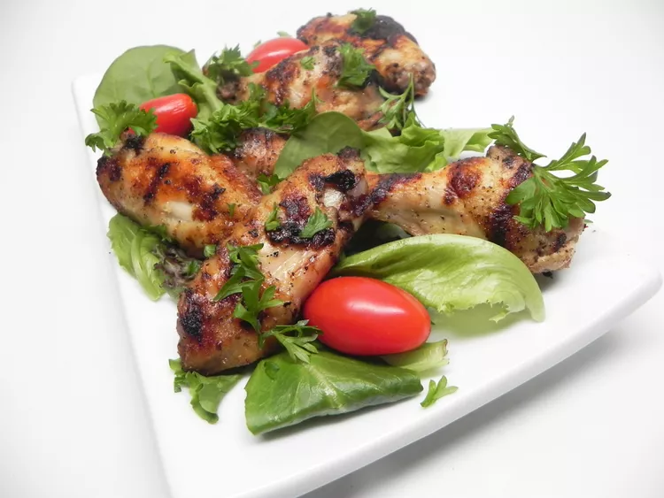

Home
Lemon and Garlic Chiken Wings

Description
This Lebanese recipe for chicken wings (Jawaneh) is simply delicious. The wings
are marinated for 1 hour in the refrigerator before grilling them under the
roiler or on the barbeque.
Ingredients
- 3 tablespoons extra virgin olive oil
- lemon, juiced
- 3 cloves garlic, pressed, or more to taste
- salt and pepper to taste
- 16 chicken wingsl
- 2 tablespoons chopped fresh parsley (Optional)
Steps
-
Combine olive oil, lemon juice, garlic, salt, and pepper in a
bowl. Add chicken wings, cover with a plate or plastic wrap,
and marinate in the refrigerator for 1 hour.
-
Set an oven rack about 6 inches from the heat source and preheat
the oven's broiler. Line a baking sheet with aluminum foil.
-
Remove chicken wings from the marinade and place on the prepared
baking sheet
-
Broil until no longer pink at the bone and juices run clear,
approximately 7 minutes, flipping chicken wings once after
4 minutes. An instant-read thermometer inserted near the bone
should read 165 degrees F (74 degrees C). Sprinkle with parsley.